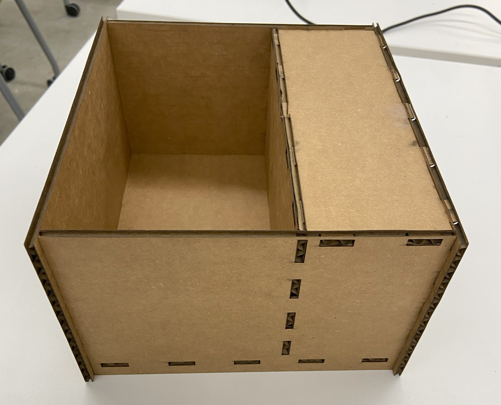
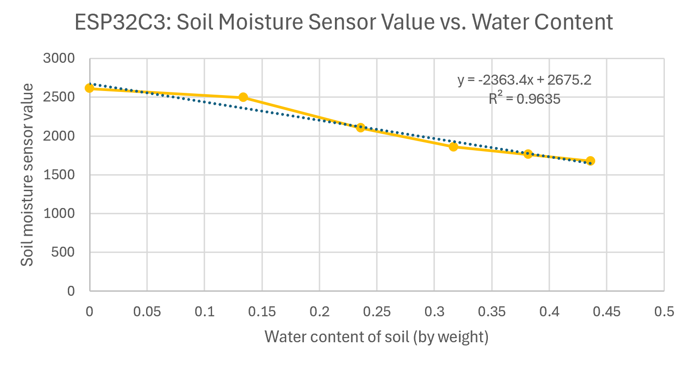

HOW IT WORKS: A Demonstration Video
The program runs every 30 seconds. It reads the soil moisture in the soil, determines if it is too low,
calculates how much water needs to be added and turns on the peristaltic pump for that required time. It also
checks if the soil moisture is above the max (saturation of soil) and turns on a warning LED if it is.
Check out the different responses for dry soil, wet soil, and pure water.
LINK TO VIDEO IN GOOGLE DRIVE
This video is to show how program works. It is meant to demonstrate that the peristaltic pump (and LED) responds to different levels of soil moisture and that the program can cal calculate and add the correct water amount (mL) to reach the desired water content/soil moisture. However, in actual use the program would update less frequently (hours) and also the pump and soil moisture sensor are located in the box (see pictures on this page).
Pictures of finished product:
Front view (open front)
Top view
Back view: wiring (open back)
A Box without Glue: Easily Build and Taken Apart!
No glue, no screws, just cartboard and Mortise and Tenon joints. Easy to assembled and easy to take apart.Download the STL file
Dowload the DFX files:


For assembly of the box check out the final project progress page! Make sure to do the wiring before pushing in the back plate.
Calibration of the Soil Moisture Sensor:
Needed:
- Arduino or ESP32C3 with wiring, cable, etc.
- Soil Moisture Sensor (obviously)
- Potting soil
- Transparent/translucent plastic cup (to put the soil in)
- Coffee filters
- Scale
- Spoon (to move soil into cup)
- Spoon (to drip water onto soil)
- Tape
Step 1: Set up the soil moisture sensor
Use the schematic and code below. Measure and save the sensor value in air and pure water.
Download the calibration code
Step 2:
Prepare the cup. Put the coffee filter in the cup and secure to cup with tape.
Save the weight.
Step 3:
Add soil, push down on it sligtly, measure and save the weight (dry_weight). Add the soil moisture sensor. Wait
2 minutes then save the soil moisture sensor value.
Step 4:
Add 15 mL of water to the soil, distribute evenly. Wait 2 minutes and save value.
Step 5:
Repeat step 4 until the coffee filter starts dripping from the bottom. This means the soil is saturated and
cannot hold more water.
Step 6:
Calculate the water content (by weight) in excel.
water content (wc) = (Weight_dry - Weight_total) / Weight_total
wc = (W_tot - W_d) / W_tot
wc = added water (mL) / (weight of dry soil + added water)
Step 7: Make a graph and retrieve a formula
Make a graph in excel with water content on the x axis and soil moisture sensor value on the y-axis. Create a
linear trendline and display the formula. Determine and save a and b from the formula y = ax + b.

Determining Speed of the Peristaltic Pump:
Needed:
- Arduino or ESP32C3 with wiring, cable, etc.
- Peristaltic pump
- Bottle with water
- Empty plastic cup
- Scale
Step 1: Set up the peristaltic pump
Use the schematic and code below to set up the peristaltic pump for testing.
Download the calibration code
Step 2:
Let the peristaltic pump run for 5 seconds at different power levels (0-255). Determine the amount of
water that is being pumped in 5 seconds (determine weight with a scale).
Step 3:
Repeat 4 times and determine the average over 4 trials.
Step 4:
Convert to mL/s by diving volume by time (5s). Determine what power level you like/want to use and save
that value for later.
ESP32C3 CODE: Soil Moisture Sensor and Peristaltic Pump Working Together!
Needed:
- Values a and b from soil moisture sensor calibration
- Max water content (when soil is saturate) from soil moisture sensor calibration
- Pump speed from peristaltic pump calibration
- Pin for sensore, pump and LED
- Dry weight of the soil in the cup (before it was ever watered).
- Choose desired water content (by weight, e.g., 0.35 so 35% of the total weight is water); must be below the max water content/saturation value.
y = ax + b where y is the value measure by the moisture sensor, a is the slope and b is the sensor value for dry soil (a and b determined at calibration). Solve for x to get the water content.
x = (y - b) / a
Get the amount of water to add to get the desired water content:
Water to add (mL) = (W_d/(1-wc_desired)) - (W_d/(1-wc_current))
Deriving the formula:
Known variables are y (sensor value, soil moisture), x (water content, wc), and dry weight (W_d) (measured at calibration). Want to get the total weight (W_tot) of soil + water at a given point.
water content (wc) = (W_tot - W_d) / W_tot and we want to know W_tot (total weight).
Download the final ESP32C3 code!
// SOIL MOISTURE - PERISTALTIC PUMP - CALIBRATED
// EPS32C3 (conversion)
class SoilMoist {
// CLASS MEMBER VARIABLES
// variables that are INITIRALIZED AT STARTUP
int SM_pin; //soil moisture sensor pin
int ledPin; // pin of LED
int pumpPin; // pin of pump
//GET THESE VALUES
// higher value is in air, lower value in water
int interval; // interval at which soil moisture values is read (milliseconds)
float desired_wc; // the desired water content by weight (wc_d)
// GET THESE VALUES FROM CALIBRATION (fill out in FIREBASE)
// int water_min; // minimum value sensor (pure water)
// int air_max; // maximum value sensor (air)
float b_dry_soil; // soil moisture sensor value from dry soil.
float soil_max_wc; // the water content of saturated soil, refer to calibration curve.
float a_slope; // the slope from the linear fitted line from calibration.
float speed_pump; // how many mL/s are moved by the pump. (seconds)
// weight the dry soil (doesn't need to be from calibration)
float dry_weight; // the dry weight of the soil (W_dry) when it was put into the pot/cup without addition of water. (GRAMS)
// variables that maintain CURRENT STATE
// GET FROM SENSOR:
int y_soil_sensor; // value from the soil moisture sensor
// CALCULATE:
// water content by weight (so % water of the total weight)
float x_current_wc; // current water content by weight (wc_c). This is x from y = a*x + b (y_soil_sensor = a_slope * x + b_dry_soil).
float delta_water_vol; // change in water volume, aka how much mL needs to be added/pumped.
int time_pump; // time pump is on to get desired water content. (in milliseconds)
// to keep check of time
unsigned long lastUpdate; // last update (in milliseconds)
public:
SoilMoist(int SENSOR, int LED, int PUMP, int INT, float a, float b, float W_d, float soilMAX_wc, float desiredWC, float PUMPspeed){
SM_pin = SENSOR;
ledPin = LED;
pumpPin = PUMP;
interval = INT;
a_slope = a;
b_dry_soil = b;
dry_weight = W_d;
soil_max_wc = soilMAX_wc;
desired_wc = desiredWC;
speed_pump = PUMPspeed;
pinMode(ledPin, OUTPUT); // set LED pin to an OUTPUT
pinMode(pumpPin, OUTPUT); // set pump pin to an OUTPUT
lastUpdate = 0; // start clock at zero
}
void Update(){
// check to see if it's time to read of the soil moisture value
if(millis() - lastUpdate >= interval){
lastUpdate = millis();
y_soil_sensor = analogRead(SM_pin);
x_current_wc = (analogRead(SM_pin) - b_dry_soil) / a_slope; // x = (y-b)/a where y is value from sensor, a and b are derived from the calibration of the sensor.
delta_water_vol = (dry_weight/(1 - desired_wc)) - (dry_weight/(1 - x_current_wc));
time_pump = delta_water_vol / speed_pump * 1000; // *1000 to get milliseconds.
Serial.println("NEW MEASUREMENT");
Serial.println("Interval: " + String(interval));
Serial.println("a_slope: " + String(a_slope));
Serial.println("b_dry_soil: " + String(b_dry_soil));
Serial.println("dry weight: " + String(dry_weight));
Serial.println("soil_max_wc: " + String(soil_max_wc));
Serial.println("desired_wc: " + String(desired_wc));
Serial.println("Sensor Value:" + String(y_soil_sensor));
Serial.println("current_cw: " + String(x_current_wc));
Serial.println("delta_water_vol: " + String(delta_water_vol));
Serial.println("time_pump: " + String(time_pump/1000));
x_current_wc = (y_soil_sensor - b_dry_soil) / a_slope; // x = (y-b)/a where y is value from sensor, a and b are derived from the calibration of the sensor.
if (x_current_wc >= soil_max_wc) {
digitalWrite(ledPin, HIGH); // turn on LED to show that something is wrong. The water content is equal to or higher than the saturated soil --> too much water!
}
else if (x_current_wc < desired_wc){
delta_water_vol = (dry_weight/(1 - desired_wc)) - (dry_weight/(1 - x_current_wc));
time_pump = delta_water_vol / speed_pump * 1000; // *1000 to get milliseconds.
//Serial.println("delta water volume:" + String(delta_water_volume));
//Serial.println("time pump is on (ms):" + String(time_pump));
// led pump run for the calculated time to add the estimated amount of water to reach desired water content in the soil.
analogWrite(pumpPin, 255);
delay(time_pump);
analogWrite(pumpPin, 0);
digitalWrite(ledPin, LOW); // turn off red LED
}
else {
digitalWrite(ledPin, LOW); // turn off red LED
}
}
}
};
// sensor pin = 4, led pin = 3, pump pin = 7.
// interval is 30 sec. --> 30000 ms
// FROM CALIBRATION (EPS32C3):
// a = -2363.4
// b = 32675.2
// W_d = 100 (g)
// soil_max_wc = 0.436
// desired_wc = 0.35
// pump_speed (255) = 2.3 mL/s
SoilMoist sm1(4, 3, 7, 30000, -2363.4, 2675.2, 100, 0.436, 0.35, 2.3);
void setup() {
Serial.begin(9600);
}
void loop() {
sm1.Update();
}